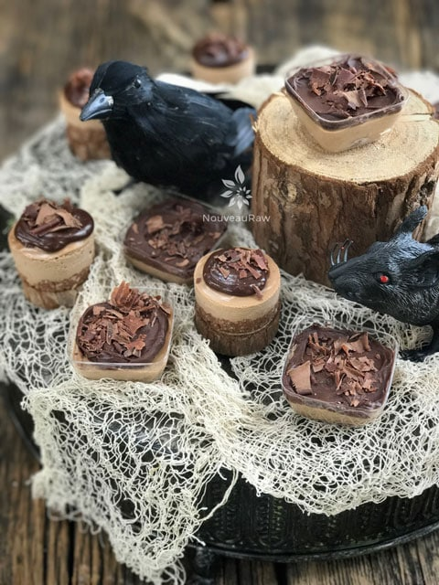

HALLOWEEN Sugar Free Mocha Caramel Party Cheesecakes
~ raw, vegan, gluten-free, no added sugar ~
Let me start off by saying that this dessert is not totally sugar-free if you add the ganache. I am working on a new sugar-free recipe for that, but right now the cheesecake is the only part where I used Markus Sweet sugar replacement.
I don’t always lean towards sugar (sweetener) replacements, but every once in a while, I like to mix things up. Plus, I get many requests from readers asking me to incorporate some recipes using Xylitol. We don’t care for Xylitol all on its own, so when I stumbled upon Markus Sweet, I was thrilled.
It is made from Lohan Guo Monkfruit and Erythritol, a natural alcohol sugar found in the human body made from non-GMO plant sources. It passes right through the body without being absorbed, and has no effect on the gastrointestinal tract: no gas, no diarrhea, nothing except a sweet taste on your tongue!
It tastes like brown sugar with a hint of caramel. Zero calories, zero glycemic! Does not raise blood sugar or insulin! Great for diabetics. Does not feed Candida or yeast! Nor does it cause digestive distress like xylitol. (source)
Let’s move onto these adorable little desserts. They are sweet, dainty, rich, and ideally suited for any special occasion. I rarely make a full-size cheesecake anymore. Over the years I learned that it was best to create a single serving to help control portion control as well making it easier to serve to our guests. Nowadays, I have shrunk the single serving to sample sizes. I do this primarily when I am serving multiple desserts. It allows our guests to taste several nutritional desserts without getting a sour tummy. I made these for our Annual Halloween Party that we hosted. Hence the creepy cloth and raven in the photo. :)
There is something really fun about making tiny desserts. I encourage you to give it a try. They can be made up well in advance and frozen which can take some stress off of you if you have a lot of party preparation to do. And should you have any leftover, you can just sneak a little sample out here and there… satisfying that sweet tooth of yours. Enjoy and many blessings, amie sue
yields 20 (2-3 Tbsp) party cheesecakes
Crust:
- 1 cup (135 g) raw almonds, soaked & dehydrated
- 1 cup (88 g) dried shredded coconut
- 2 Tbsp (13 g) raw cacao powder
- 1/4 tsp (2 g) Himalayan pink salt
- 2 Tbsp (28 g) Markus Sweet or Xylitol, powdered
- 1/4 cup (68 g) water
- 2 tsp (6 g) vanilla extract
Filling:
- 2 cups (281 g) raw cashews, soaked & dehydrated
- 1.6 cups (385g ) heavy coconut cream (fresh or canned)
- 2 Tbsp (13 g) raw cacao powder
- 2 Tbsp (8 g) organic instant coffee
- 1/4 cup (48 g) Markus Sweet or Xylitol, powdered
- 1 Tbsp (14 g) fresh Meyer lemon juice
- 1/2 tsp (4 g) liquid NuNaturals stevia
- 1 tsp (3 g) vanilla extract
- 1/4 tsp (2 g ) Himalayan pink salt
- 1/2 cup (102 g) melted coconut oil
Topping (optional):
Preparation:
Crust:
- In the food processor, fitted with the “S” blade, pulse the almonds into small pieces, then add the coconut, cacao, and salt
- Be careful that you don’t over-process the nuts and head towards making a nut butter. Nothing wrong with that… just not our goal at the moment.
- This ensures that the dry ingredients (spices) get well distributed, so you don’t end up with concentrated pockets of flavors.
- Add the sweetener and vanilla, pulsing it together. Test the batter by pinching it between your fingers. If it holds, it is ready.
- Line the party cups and/or a muffin pan with removable bottoms on a baking pan with edges.
- This will help with transporting the desserts to the fridge or freezer.
- You can make these larger or even smaller… you have total control over creating the size you want.
- Create small balls of crust batter and place them in the bottom of each cup/cavity.
- Once done, use another cup to press the ball into a crust shape. Don’t press too hard; we don’t want it compacted in there.
- Dip the bottom of the cup in water after you press every other crust. This will prevent the crust from sticking to the bottom of the cup that you are using to shape the crusts. I hope that made sense. :)
- Set aside while you make the cheesecake batter.

Filling:
- Add to a high-speed blender; cashews, coconut cream, cacao, instant coffee, sweetener, lemon, stevia, vanilla, and salt. Blend until creamy.
- This can take 3-5 minutes depending on your machine. Step occasionally to test for grittiness. Feel grit? Keep blending.
- While the blender is running and a vortex is formed, drizzle in the coconut oil. Resume blending until all is well incorporated.
- Pour 2-3 Tbsp of the filling into each party cup.
- Lightly tap the pan on the countertop to help work out any air bubbles that may be trapped in the batter.
- Place in the freezer for 4-6 hours or until firm.
- Another option is to allow them to firm up in the refrigerator for at least 8 hours, preferably 24 hours.
- Remove and place a dollop of ganache on top. You can also add chocolate shavings for decor, but that is optional. Be creative!
- Storage – Keep in the fridge or freezer when you are not eating it.
- It will keep for 3-5 days in the fridge or 1-2 months in the freezer.
- Be sure to seal it well, so it doesn’t absorb fridge odors.
- If you freeze these, defrost them by placing them in the refrigerator for at least 24 hours before serving.
© AmieSue.com